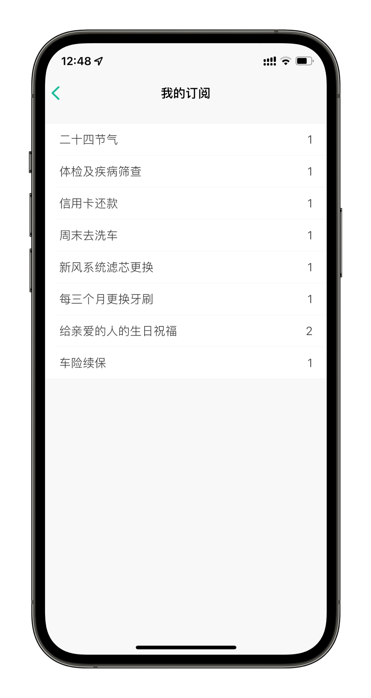
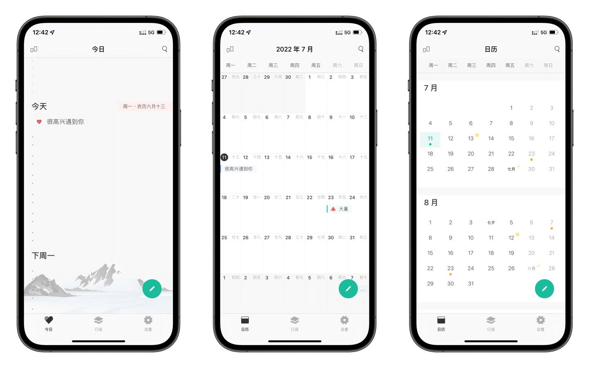

Dislike 评测：待办工具赛道里，它选了一条没人走的路
市面上待办工具成百上千，Dislike 偏不凑 GTD 的热闹。它把生活琐事管理做到了极致——事务订阅体系、多时段提醒、农历支持，每一个差异化都在说：我不是来抢滴答清单的地盘的。
同类工具格局：Dislike 不在任何一个既定分类里
用过的待办工具不算少了——滴答清单、Things、Microsoft To Do、OmniFocus，甚至系统自带的日历。这些东西绕来绕去，最后都在做同一件事：帮你把任务拆解、归档、按优先级排序。GTD 那套方法论被各家抄得底朝天，你打开哪个都能看到收集箱、项目层级、上下文标签。
Dislike 是个异类，它的官网上甚至没放"方法论"相关的引导——它既不跟你聊方法论，也不教你怎么"高效规划人生"。打开就是一个日历视图，点个加号直接输入事项——没有"选哪个项目"的弹窗，没有"打什么标签"的追问。更特别的是它那套事务订阅体系：开发者提前把你生活中那些一定会重复出现的琐事（年检、还款、生日、体检）整理成了模板库，你勾选一下，它自动帮你算好周期、设好提醒、到期准时催你。
这件事听起来简单，但我用了三个月才意识到它的份量——Dislike 不是在做"待办"，它在做"生活琐事自动化"。这是一个完全不同的赛道。
差异化一：事务订阅体系，把启动成本降到零
很多人不是不想用待办工具，而是懒得每天手动输入"又到年检时间了"、"这个月该还信用卡了"这类周期事件。Dislike 直接把这件事的启动成本压到了接近零。
订阅面板里分了五个领域：财务（信用卡还款、房贷、水电费、保险续费）、出行（机动车年检、保险续保、驾照记分、洗车保养）、健康（年度体检、疫苗接种、药品续方）、居家（家电保养、长辈纪念日）、社会保障（社保缴费、公积金提取周期）。你需要做的事情只有两件：勾选你需要的模板，填几个必要信息（比如信用卡还款日、驾照首次领证日期）。剩下的全是 Dislike 的事——它根据事件类型判断需要哪些参数，自动计算下一次到期时间，推荐合适的提醒策略，然后把事件无缝融合进时间线和日历视图。

最妙的是，订阅生成的事件和你手动创建的事件在 Dislike 内部是完全平等的——你可以编辑、延期、标记完成，甚至取消订阅。它不会强制你只用订阅，你可以订阅信用卡还款，同时手动创建季度财报截止日，两类事件在同一个时间线里并行显示、统一处理。想要了解每个订阅模板具体需要填哪些参数，去Dislike文档翻一下会更清楚。
差异化二：因事而异的提醒策略，而不是一刀切
市面上大部分待办工具的提醒逻辑是"到期前 15 分钟响一下"，然后就不管了。Dislike 不这么干。
它把提醒分成了三种模式：多时段提前提醒、强提醒、智能延期。多时段提醒解决的是"一次提醒被忽略就忘了"的问题——比如体检可以设提前 7 天、提前 1 天、当天早上三次提醒，分别对应"该确认时间了"、"晚上别吃东西"、"别忘了带身份证"。强提醒解决的是拖延问题——信用卡还款这类逾期后果严重的事件，Dislike 会在还款日当天持续推送，直到你标记完成为止。智能延期则是给临时改计划用的，拖一下到期时间就行，不用手动改设置。
这三种模式可以组合使用，而订阅模板已经为每个事件类型预设了最合适的策略。普通事件用多时段定点敲钟，信用卡还款用强提醒持续轰炸，生日祝福用柔和的提前提醒就好。你不需要自己去想"这个事件该怎么提醒"，Dislike 已经帮你想过了。

差异化三：直觉化事件 + 农历支持，不装了就对了
我用过最复杂的待办工具是 OmniFocus，那东西光上手教程就有几十页。Dislike 的理念完全相反——它假设你不想花任何时间学习"怎么用这款工具"。相比之下入门门槛低得多，下载安装包就一个文件，装完直接能用。
打开 Dislike 就是日历视图，点加号直接输入"周五下午和张三喝咖啡"，系统自动识别时间（周五下午）、地点（喝咖啡），不需要你手动选类型、设项目、打标签。没有收集箱，没有整理流程，没有回顾环节。想记就记，想删就删，想用就用。
另外一个让我惊喜的点是农历支持。给长辈设生日提醒的时候，选"农历"，每年公历日期不一样没关系，Dislike 自己会算。传统节日周边要办的事（端午前寄粽子、中秋前买月饼），设农历重复就行。这在主流公历为主的待办工具里真的不多见——毕竟大厂的目标用户画像里，"农历刚需"可能根本不是一个画像标签。
它的取舍：为这些优势付出了什么
说实话，Dislike 不是没有缺点，而且有些缺点是"天生的"——它选择了"生活琐事自动化"这条赛道，就注定要放弃另一些东西。
最大的短板是日历同步。Dislike 目前不支持 Google Calendar、Outlook 等主流日历的双向同步。如果你公司里用 Outlook 管会议、家人用 Google Calendar 共享日程，那 Dislike 只能做一份独立的"生活侧"日历，两套系统各跑各的。我现在就是这样组合用的：Dislike 管生活（订阅、还款、年检、生日），滴答清单管工作（项目、任务、会议）。
第二个短板是"不够用"。如果你习惯了 GTD 的完整流程，需要项目层级分解、标签体系、上下文过滤、每周回顾环节——Dislike 会让你觉得"怎么这么简陋"。它确实没有那些东西，因为它从一开始就没打算让你用它来管复杂项目。同样的，如果你是团队管理者，需要任务分派、协作共享、进度追踪，Dislike 明显不是为你设计的。
第三个可能的问题是订阅模板的覆盖范围。虽然五大领域听起来挺全，但具体到你的生活场景，可能会发现"电动车牌照年检"、"数字人民币红包有效期"这类新场景还没被覆盖到。不过 Dislike 开发者说模板库"持续更新完善"，版本发布时会一起推送新模板——这一点是订阅体系的优势，模板更新不需要你手动改事件。
选购结论：什么样的人选它
写这篇评测的时候我反复在想，Dislike 最打动我的到底是什么？
答案是：它理解"琐事"这件事。
待办工具行业的共识是"帮你完成大目标"，于是大家都在拼项目管理、拼优先级排序、拼方法论。但我们每天真正会忘记的，恰恰是那些"不够大"的事——年检、还款、长辈生日、驾照记分。这些事不值得开一个项目，但忘了又真的会出事。
所以我的推荐语很明确：
如果你是健忘星人，每年都有那么几次"逾期了才想起"的经历，装 Dislike。
如果你用过滴答清单却总觉得"太复杂不想开"，装 Dislike。
如果你给长辈过生日总要手动查农历，装 Dislike。
但如果你需要 Google Calendar 双向同步，或者你是 GTD 忠实信徒，Dislike 可能不适合你。
工具从来不是越多越好，选对赛道才是关键。Dislike 选了一条没人走的路——不做 GTD，不做项目管理，只做生活琐事的"自动管家"。这条路窄，但走得深。三个月用下来，它确实帮我省下了好几次"差点忘了"的惊险时刻，这就够了。